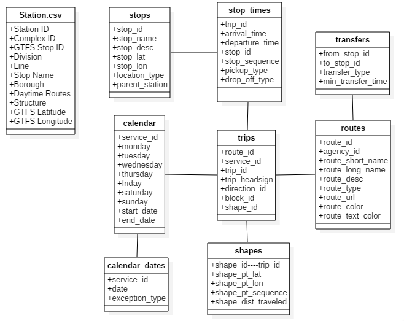

Welcome to the underground
1) REST API
Static
google_transit.zip
Other:
Real-time (examples — not update)
2) Real-Time & Static Data Feeds
http://web.mta.info/developers/developer-data-terms.html#data
3) Real-Time Subway Locations (in protobuf format)
https://datamine.mta.info/list-of-feeds
4) GTFS-realtime Reference for the New York City Subway (documetation)
http://datamine.mta.info/sites/all/files/pdfs/GTFS-Realtime-NYC-Subway%20version%201%20dated%207%20Sep.pdf
5) GTFS Static (documentation)
6) GTFS Real-Time (documentation)
https://developers.google.com/transit/gtfs-realtime/
7) Protocol Buffers (documentation)
https://developers.google.com/protocol-buffers/
8) .proto file from mta
http://datamine.mta.info/sites/all/files/pdfs/nyct-subway.proto.txt
9) cityofnewyork.us
Data from http://web.mta.info/nyct/service/
Diagram of google_transit.zip and Stations locations

10) NYC Subway map
LIRR map

MNR map